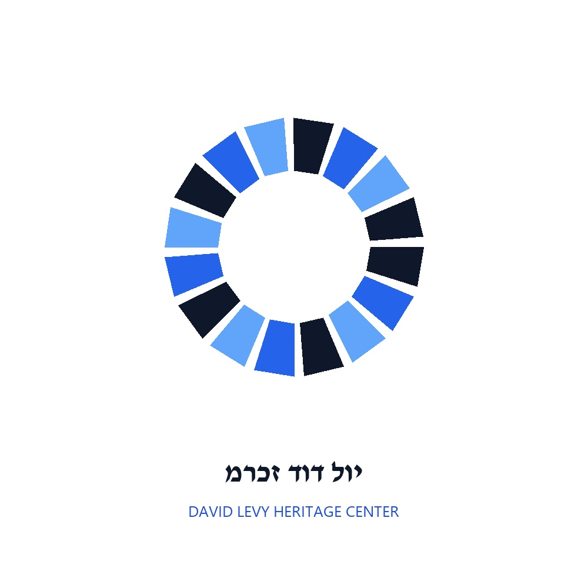

חלופה A1: עיגול פסיפס מלא (Full Solid Mosaic Disc)
Option A1: Full Solid Mosaic Disc (No Hollow Center)
צורניות: עיגול מלא 100% באריחים אדריכליים ישרים
- אלמנטים: סמל מעגלי מלא ושלם (ללא חלל ריק במרכז) העשוי אריחי קרמיקה ישרים ומצולעים בלבד.
- קונטרסט: מעבר חד בין תכלת מים/קרח, כחול ממלכתי (State Blue) ונייבי עמוק.
- משמעות: תמונה אחת שלמה ומלוכדת של כל חלקיה החברתיים של מדינת ישראל.

חלופה A2: פסיפס קורן מלא (Radiant Solid Mosaic Circle)
Option A2: Radiant Concentric Solid Mosaic Circle
צורניות: אריחים הקורנים במעגלים מרוכזים מהמרכז אל ההיקף
- אלמנטים: אריחים אדריכליים הקורנים כלפי חוץ במעגלים מרוכזים ללא חלל ריק במרכז.
- סמליות: פריצת תקרת הזכוכית והפצת אור השוויון והמנהיגות מעיירת הפיתוח בית שאן לכל הארץ.

חלופה A3: עיגול 4 אבני היסוד (4-Quadrant Solid Badge)
Option A3: 4-Quadrant Solid Mosaic Badge
צורניות: 4 רבעי פסיפס מלאים עם קווי חיתוך עזים
- אלמנטים: סמל מעגלי מלא המחולק ל-4 רבעים גיאומטריים של אריחי פסיפס צפופים.
- סמליות: 4 אבני היסוד של המורשת (*מנהיגות חברתית, קיבוץ גלויות, אחדות הפסיפס, ורטוריקה וממלכתיות*).

חלופה A4: מסגרת טבעת פסיפס (Architectural Mosaic Ring)
Option A4: Architectural Mosaic Frame Ring
צורניות: מסגרת היקפית באריחים קריספיים ורווחים מודגשים
- אלמנטים: מסגרת טבעת היקפית עשויה אריחי פסיפס אדריכליים בעלי הפרדה ברורה.
- שימוש: מותאם במיוחד להדפסה ברורות במדפסות משרדיות ולחותמת מוסדית רשמית.